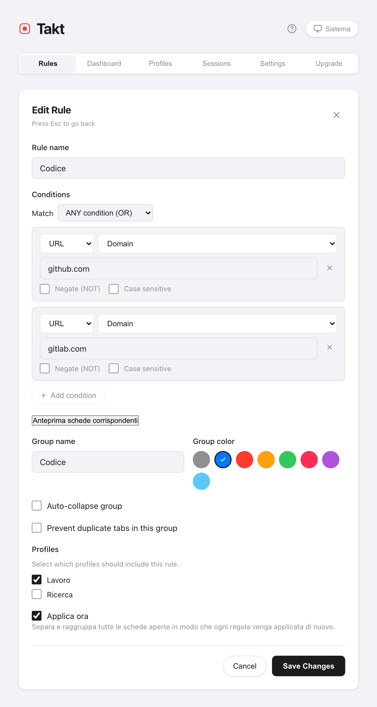
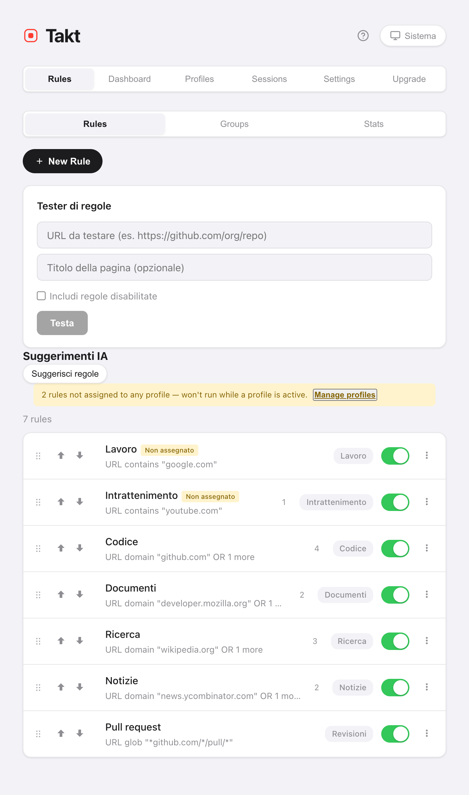

In breve: installa Takt, crea una regola come dominio URL github.com → gruppo "Code", blu e salva. Da quel momento ogni scheda di GitHub finisce nel gruppo blu "Code" mentre si carica.
- Free: 5 regole, con corrispondenza di tipo contiene, esatto o dominio.
- Premium: regole illimitate, pattern glob e regex, corrispondenza sul titolo della pagina, fino a 10 condizioni AND/OR.
- Il confronto avviene sul tuo computer. Nessun account, nessuna analisi dei dati d'uso.
Perché i gruppi di schede di Chrome non si organizzano da soli?
I gruppi di schede di Chrome sono uno schedario senza archivista. Fai clic destro, scegli "Aggiungi scheda al gruppo", ripeti. Apri venti link in una mattina di lavoro e archivi venti volte, o più probabilmente nessuna.
Chrome aveva una funzione IA, "Organizza schede", per una pulizia occasionale, ma Google l'ha ritirata nel 2025. Oggi Chrome non raggruppa più le schede al posto tuo. E nemmeno quella funzione seguiva istruzioni: non potevi dirle "le pull request vanno sempre in Reviews". Una regola sì.
Come creo una regola di raggruppamento?
- Installa Takt dal Chrome Web Store.
- Apri la pagina delle opzioni di Takt e fai clic su New Rule.
- Aggiungi una condizione. URL · Domain · github.com prende github.com e tutti i suoi sottodomini.
- Dai un nome al gruppo, scegli un colore e salva.
Lascia spuntato Applica ora e Takt raggruppa subito di nuovo le schede aperte. Le nuove schede vengono raggruppate mentre si caricano.

Quale tipo di corrispondenza usare?
Alla maggior parte delle persone basta Domain. Usa gli altri quando un dominio è troppo ampio.
| Tipo di corrispondenza | Pattern | Cosa prende | Piano |
|---|---|---|---|
| Domain (dominio) | google.com | docs.google.com, mail.google.com, google.com | Free |
| Contains (contiene) | localhost | http://localhost:3000/api | Free |
| Exact (esatto) | https://mail.google.com/mail/u/0/#inbox | Solo quell'URL | Free |
| Glob | *github.com/*/pull/* | Tutte le pull request, in qualsiasi repository | Premium |
| Regex | jira\..*/browse/PROJ-\d+ | I ticket di un solo progetto | Premium |
Ogni condizione può anche essere negata (l'URL NON contiene google.com) o resa sensibile a maiuscole e minuscole. Premium aggiunge la corrispondenza sul titolo della pagina e la combinazione di fino a 10 condizioni con AND oppure OR.
E se due regole corrispondono alla stessa scheda?
Vince la prima corrispondenza. Le regole vengono controllate dall'alto verso il basso e il controllo si ferma al primo risultato.
Quindi ordinale dalla più specifica alla più generica. Una regola "Reviews" per le pull request deve stare sopra una regola "Code" per tutto GitHub, altrimenti ogni pull request finisce in "Code". Trascina una regola, o usa i pulsanti ↑/↓, per spostarla.

Come verifico una regola prima di fidarmi?
In due modi, entrambi nella pagina Rules:
- Tester di regole. Incolla un URL (e, se vuoi, il titolo di una pagina). Takt ti dice quale regola si attiverebbe.
- Anteprima schede corrispondenti. Dentro l'editor, elenca le schede già aperte che la regola prenderebbe, prima che tu salvi.
Un set iniziale di cinque regole
Cinque regole coprono la maggior parte delle giornate di lavoro, e cinque è esattamente il limite gratuito.
| Gruppo | Condizione |
|---|---|
| Codice | Domain github.com |
| Documentazione | Domain developer.mozilla.org |
| Posta e calendario | Domain google.com |
| Sviluppo locale | Contains localhost |
| Da guardare | Domain youtube.com |
Non sai cosa scrivere? Il riquadro Suggerimenti propone regole in base ai siti che tieni già aperti.
Cosa le regole non possono fare
Le regole prendono solo ciò che descrivi. Una scheda di un sito per cui non hai mai scritto una regola resta fuori dai gruppi. Se preferisci non scrivere regole affatto, imposta la modalità di raggruppamento su Categoria o IA.
Scrivi una regola. Guarda la prossima scheda mettersi al suo posto.
Aggiungi Takt a Chrome, è gratisDomande frequenti
Chrome può raggruppare le schede automaticamente senza estensioni?
No. Chrome suggeriva gruppi con una funzione IA, "Organizza schede", ma Google l'ha ritirata. Oggi i gruppi di schede di Chrome si creano a mano. Un'estensione basata su regole come Takt raggruppa le schede automaticamente e continua a mandare gli stessi siti nello stesso gruppo.
Quante regole posso creare gratis?
5 regole, una condizione ciascuna, con corrispondenza di tipo contiene, esatto o dominio. Premium ($3/mese o $30/anno) toglie il limite.
Posso mettere in pausa una regola senza eliminarla?
Sì. Ogni regola ha un interruttore on/off nell'elenco. Una regola disattivata conserva le sue impostazioni e smette di corrispondere.
Takt invia i miei URL da qualche parte per applicare le regole?
No. Il confronto avviene nel browser, su regole salvate in locale. Vedi come Takt tiene i dati in locale.